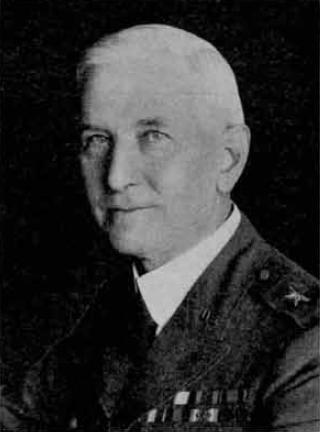

PHOTO ALBUM, GULICK LINE

Major General John W. Gulick, USA (1873-1939)
Paternal cousin and descendant of 9th great-grandfather Hendrick Van GULICK who moved to America from Holland 1653.
His father was 1st Lt James W. Gulick CSA, Confederate officer of Goldsboro NC, b. NJ.
Some surprising family resemblance to Professor Henry C. Gulick (father).
Fort Gulick in Panama Canal Zone was named after Major General John W. Gulick.
Mutual Descent from Jochem (ca 1645-1723, Captain of Militia Gravesend Long Island 1705) and (Jacomyntie Van Pelt dau of Teunis Van Pelt 1622-99 Dutch
Patroon of Van Pelt Manor, New Utrecht, Kings
Co, Long Island, NY) Gulick...
Gulicks owned slaves (4th g gfather ancestor Cornelius
Gulick (1767-1837, baptized Harlingen Dutch Reformed Church), "Corns." Gulick age 60-70, 5 blacks (2 slaves & 3 free colored) 1830 Census p. 42 Franklin Twp Somerset Co NJ just NE of Princeton)
in America in the 19th century in NJ & northern Virginia (e.g., 1860 Southern District Loudoun Co & Fauquier Co). 33 Gulick Confederate soldiers listed Civil War
Soldiers NPS site, especially from Virginia. Some officers, plus 4 soldiers in Mosby's Cavalry. Great grandfather Henry F. Gulick was 19th century Democrat...
American Revolution ancestor paternal 5th g gfather Capt John Petty (1730-1791), Sussex Co New Jersey Militia.
3rd g gfather Henry J. Gulick (1789-1861), War of 1812 • Somerset County, New Jersey Militia.

Captain Jan Teunissen Van Pelt (1645-1734)
Half brother of 8th g gmother Jacomyntie Van Pelt Gulick. Captain of Foot 1691, Richmond Co NY (Staten Island) & Member of the Assembly Richmond Co & of the
Council for Indians. Witnessed the baptism of Pieter Gulick, son of ancestors Capt Jochem Gulick and [Jacomyntie Van Pelt] Teunise, on 22 Sept 1689 at Old 1st Dutch Reformed Church,
Breuckelen (Brooklyn), Kings Co, Long Island, NY... Capt Jochem Gulick approximate location 1693: 2138 McDonald Ave, Brooklyn, NY 11223 (N of Gravesend Long
Island)... From Early Settlers & Indian Fighters of Southwest Texas
By Andrew Jackson Sowell: direct paternal descendant of this Capt Jan Teunissen Van Pelt was
Captain Malcolm VAN PELT (b. 1831 Charlotte NC d. 1910 Concan, Uvalde Co TX),
Texas Indian fighter. Common ancestor Teunis Jansen Laenen "Anthonius Laenen" Van Pelt (ca 1622-1699): Tree.
Luther Halsey Gulick Jr
Paternal cousin and descendant of Hendrick Van Gulick who moved to America from Holland 1653.
He helped invent the game of basketball and organize the Campfire Girls.
Born Hawaii into the Gulick family of missionaries.
General John Hunt Morgan, KY CSA
Representing paternal great grandmother Josephine GARNER Gulick.
Her father was a Confederate soldier from Bath Co KY ("he fought on horseback locally, was shot in leg..."), Isaac D. GARNER (1831 -
d. Warrensburg MO 1921, his uncle Isaac B. Garner, 1850 Wyoming Bath Co KY, 2 slaves).
2 of his wife's (Eliz NESTOR Garner) brothers were Confederate regulars from Bath County: Felix Nestor was with
Confederate General John Hunt Morgan KY Cavalry (2nd Battalion Mounted Rifles KY Volunteers CSA) & "killed in battle, June 1864" on Morgan's
last Kentucky raid (Mt Sterling, Lexington, CYNTHIANA, Hazel Green), abt. age 18 or 19 (actually,
may? have survived the war).
Joshua Nestor was with Co H 5th KY Inf CSA of the Kentucky "Orphan Brigade"... History of Kansas under Henry F. Gulick says Isaac Garner was Confederate soldier. It sounds like he may have
been a Confederate Partisan guerilla or maybe in the 2nd Battalion Mounted Rifles KY Volunteers CSA... Additional DNA MATCH cousin (1st cousin 4x removed =
1st cousin of 2nd g gmother Eliz Nestor Garner) John G. Nester, Co I 63rd
VA CSA (Battles Chickamauga to Atlanta, TN...) from SE of Hillsville Virginia... Also 1st cousins of gg gmother Eliz Nestor Garner from E of Hillsville VA:
Aaron Grissom Nester Sr, Co G 54th Regmt CSA (Chickamauga to Atlanta, TN, NC...) & Franklin W. Nester Co E 30th Battalion Virginia Sharpshooters CSA (Shenandoah Valley,
Cold Harbor...).

Seven children of Peter Johnson Gulick
Paternal cousins and descendants of Hendrick Van Gulick who moved to America from Holland 1653.
The Gulick family of Hawaiian missionary Reverends.

Bill Gulick, Western Writer
Paternal uncle, born Kansas City MO. One of the 1st presidents of the Western Writers of America,
1950's. Son of grandfather Dr. (DVM) G.C. Gulick (b. 1889 Ness Co Kansas, buried 1964 Oklahoma City OK). Wrote novels which formed basis of movies "Bend of the River" with Jimmy Stewart and "Hallelujah Trail" with Burt Lancaster.

Dirck Gulick House, N of Princeton NJ
House built 1752 by direct paternal ancestor, 6th g grandfather Dirck Gulick (1702-1787, Deacon of Harlingen Dutch Reformed Church), in epicenter area of colonial Dutch Gulicks in America. Dirck
Gulick & his partner Hendrick Vanderbilt (Hendrick Jacobsen Vanderbilt, ca 1705-aft 1762; related to tycoon Cornelius Vanderbilt (1794-1877); common ancestor Jan
Aertsen Vanderbilt, ca 1620-1705) purchased 1,710 acres of land 1727 as speculation, on a part of which the house
was built... House now occupied by Van Harlingen Historical Society.

Thomas Hampton Hall Sod House, 1888 Western Kansas
Paternal gg grandfather Thomas H. Hall family, probably ?Lane County. Grandmother Golda Hall Gulick is baby with her mother.
Aaron Grissom Nester Sr (1826-1908)
1st cousin of paternal 2nd great grandmother Elizabeth NESTOR GARNER. He was a Confederate soldier of Co G 54th VA CSA (Chickamauga to Atlanta, TN, NC...)
& was from the epicenter of Nesters, east of Hillsville, Carroll Co Virginia. Most of the Nesters stayed in this area, while a few including 3rd great grandfather
Andrew Nestor (1800-1875), moved to Kentucky & further west to Missouri & Kansas.